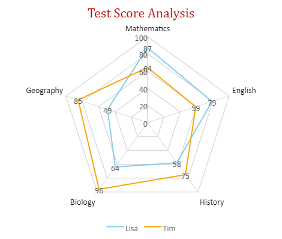

A Radar chart (also referred to as spider chart) is a two-dimensional chart that can be used to represent multivariate data plotted in rows and columns in the graphical format.
SpreadJS supports radar charts in spreadsheets in order to allow users to perform dynamic data comparisons and carry out comprehensive information analysis. Moreover, radar charts make it easier and quicker to visualize and manipulate information via enabling in-depth assessment of the aggregate values of two or more data series.
Radar charts are typically used to compare between two or more entities over a range of characteristics. In a radar chart, three or more quantitative variables are represented on axes with each category having its own value axis radiating from the center point. Lines are used to connect the series values and the relative position or angle of the axes is usually unpredictable.
Spread JS supports three types of Radar charts - 1) Basic Radar Chart 2) Filled Radar chart and 3) Radar Chart with markers.
In the example shown below, the test score analysis for two students - Lisa and Tim is depicted for six different subjects - Mathematics, English, History, Biology, Geography and Zoology with the help of different types of radar charts plotted for the following data in the spreadsheet:
An image depicting test score analysis of two students is shown below in a basic radar chart with areas highlighted by different line colors for each student:

An image depicting test score analysis of two students is shown below in a filled radar chart with areas highlighted by different colored regions for each student:
An image depicting test score analysis of two students is shown below in a radar chart with markers representing scores for each subject along with areas highlighted by different line colors for each student:
This example code shows how to create a basic radar chart, filled radar chart and radar chart with markers in a worksheet to analyse scores of two students.
| JavaScript |
Copy Code
|
|---|---|
// initializing Spread var spread = new GC.Spread.Sheets.Workbook(document.getElementById('ss'), { sheetCount: 3 }); // get the activesheet var activeSheet = spread.getSheet(0); // Add data for chart var dataArray = [ ['', 'Lisa', 'Tim'], ['Mathematics', 87, 64], ['English', 79, 59], ['History ', 58, 75], ['Biology', 64, 96], ['Geography', 49, 85], ['Zoology', 64, 83] ]; activeSheet.setArray(1, 1, dataArray); activeSheet.setColumnWidth(0, 20); for (var i = 1; i < 4; i++) { activeSheet.setColumnWidth(i, 100); } activeSheet.options.gridline.showHorizontalGridline = false; activeSheet.options.gridline.showVerticalGridline = false; activeSheet.getRange(1, 1, 7, 3) .hAlign(GC.Spread.Sheets.HorizontalAlign.center) .setBorder(new GC.Spread.Sheets.LineBorder('black', GC.Spread.Sheets.LineStyle.thin), { all: true }); activeSheet.getRange(1, 2, 1, 3).font('bold normal 10pt Arial'); activeSheet.getRange(2, 1, 6, 1).font('bold normal 10pt Arial'); // Add Radar chart // 1 - radar // 2 - radarFilled // 3 - radarMarkers var chart = activeSheet.charts.add('RadarChart', GC.Spread.Sheets.Charts.ChartType.radar, 250, 0, 500, 410, '$B$2:$D$7'); var legend = chart.legend(); legend.visible = true; legend.position = GC.Spread.Sheets.Charts.LegendPosition.bottom; chart.legend(legend); var chartArea = chart.chartArea(); chartArea.fontSize = 14; chart.chartArea(chartArea); var dataLabels = chart.dataLabels(); dataLabels.showValue = true; dataLabels.showSeriesName = false; dataLabels.showCategoryName = false; dataLabels.position = GC.Spread.Sheets.Charts.DataLabelPosition.above; chart.dataLabels(dataLabels); var title = chart.title(); title.text = 'Test Score Analysis'; title.fontSize = 22; title.color = "#b20000"; title.fontFamily = 'Cambria'; chart.title(title); var axes = chart.axes(); axes.primaryCategory.style.color = '#000000'; axes.primaryValue.majorGridLine.color = '#ccc'; chart.axes(axes); var series = chart.series(); var lisaSeries = series.get(0); lisaSeries.border.color = 'skyblue'; lisaSeries.backColor = 'skyblue'; lisaSeries.backColorTransparency = '0.5'; series.set(0, lisaSeries); var timSeries = series.get(1); timSeries.border.color = 'orange'; timSeries.backColor = 'orange'; timSeries.backColorTransparency = '0.5'; series.set(1, timSeries); |
|